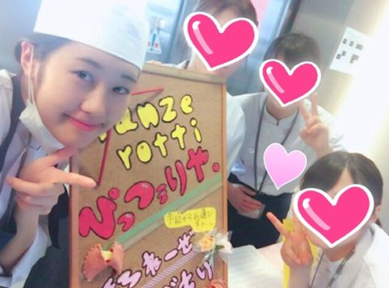

| 21歳のキャバ嬢が起業したたった1つの心がけ～ブログで稼ぐ特典付き～ | |
| せいら | |
| (2019) | |
これからお話しするのは
『失敗の先に成功がある』
というお話しです。
関西在住
うさぎと２人暮らしの
黒瀧 聖良（くろたき せいら）といいます。
私は今コミュニティの運営させて頂いております。
私たちは大阪に事務所を構え20
代初心者のための
起業コンサルタントとして投資や起業の素晴らしさを教えています。
そして今では、年商10
億円の起業家や
月収１０００万円の投資家**と一緒に仕事を
させて頂いております。
私のパートナーがたったの
2ヶ月で売上１００万円
を達成したり、
事務所でディナーパーティーを
したりと楽しい日々を送っております。
家に帰ればうさぎと遊び、
先月は10
日間沖縄に旅行✈
→ペットのうさぎちゃん
今年だけでも大阪、名古屋、東京、福岡、沖縄と
色んなところに行きました。
でも、そんな私は最初から
うまくいったわけではなく
たくさんの失敗や借金
をしてきました。
私は富山県で生まれました。
１人っ子、物心ついた時から母子家庭で
お母さんと２人きりで暮らしてきました。
言われなくても家は裕福ではないことは
わかっていて、
潜在的に将来はお金持ちになって
お母さんを楽にさせてあげたいと思っていました。
小学生の頃から『お母さんに一軒家買ってあげる』
と言っていました。
今でも幼馴染は覚えてるみたいで
『昔からそんなこと言ってたよね』と言われます。笑
平日は学校から帰ってきたら外が暗くなるまで留守番。
土日は朝から夜まで留守番。
きっと寂しくてこの頃から
誰かに認められたいって
思いが強くなったのかもしれません。
それが関係してか今でも
何をするにもとっても負けず嫌いです。
将来お金持ちになりたいとは
言っても勉強ができたわけではなく、
ふわふわと高校生まで過ごしてきました。
それからなんとなく関西の調理師学校に
行き一流ホテルのコックになりました。

夢を見たのも束の間。
毎日労働１４時間以上手取り13
万円。
一流のホテルという肩書きを
守るために必死に働いている気でした。
誰のための人生？
なんのために生きているのかわからなくなり
時間もお金もない地獄でした。
『時間とお金が欲しい』その思いだけで
初めての夜世界に１人で飛び込みました。
→一本20
万円のシャンパン
2年間キャバ嬢として一生懸命働きました。
会社員の管理職くらいの収入を得ていたのですが
楽しいと胸を張っては言えなかったです。
人気になりたくて1ヶ月26
日も
出勤した月もありました。
熱を出しながらもお客様と食事に行ったり
生理痛でも痛み止めを飲んでお酒を飲んだり
階段から落ちて骨にヒビが入ったりと
だいぶ無理をしていました。
人気になるための本を読んだり接客の勉強、
自分磨きは人一倍努力していました。
しかし、人に胸を張って言える
仕事ではないと若干後ろめたさもありました。
板挟みの気持ちのそんな時
坐骨神経痛になり歩けなくなったんです。
お酒の飲み過ぎです。
元々ビール１杯で酔っ払う私が
ワインやシャンパンを毎日飲んでいたせいで
肝臓も異常数値でした。
それが人生の分岐点
となりました。
２週間ベットの中の生活で
お金のために働かされている
そして、時間も奪われていっている
ことに気づきました。
体が動かない時の収入がない恐怖。
もし今のように体を壊してずっと動けなくなったら？？
お母さんには私しかいません。
私が守らなければいけない
たった1人の大切な家族です。
立派な娘として、そして一家の
お父さんにならなきゃという思い
で生きてきました。
だから男らしいのかも笑
もう少し稼げるようになったら親孝行する...
貯金ができたら一軒家を買ってあげる...
『今は待ってて』と思いながら生きてきました。
でも今は物をプレゼントすること
が親孝行ではなく
側にいて支えてあげることが
親孝行だと改めて思います。
だから今では月１で富山に
帰って京都のお土産を一緒に食べたり
来月は母の誕生日なので
ディズニーのプレゼントをします。
（去年は旅館に部屋食の懐石料理、貸切露天風呂をしました。）
ネットビジネス、投資、経営......
イロハの『イ』の字も知らなかった
私が今では楽しく仕事しています。
みんな自分のためじゃなく、誰かの役に立ちたくて
事業をしている人ばかりなんです。
私もその1人でした。
親孝行したい一心で起業を決意しました。
そして、仕事のために大事な時間や
目的を失わないで欲しいんです。
私は、キャバ嬢時代、そしてビジネスから
『努力は報われる』
ことを学びました。
そんなの綺麗事だって思いますか？
それはかつての私も思っていました。
『努力は報われない、結果が全てだ』
と堂々と言っていた人間です。
本気でそう思っていました。
でも今は違います。
結果が全て、
それは間違いありません。
しかし、努力が報われない人は失敗して諦めてしまう人です。
失敗しても挑戦し続ければ必ず成功する。
だから
『失敗の先に成功がある』
という言葉が大好きです。
『努力は報われる』
挑戦し続けた人にだけ成功は訪れ、
この言葉の本当の意味を知ることができます。
私はいつかあなたと繋がれることを
楽しみにしております。
その時は全力で応援します。
私のつまらない人生紀を
最後までご覧いただき
本当にありがとうございました。
こちら普段私に色々ビジネスを
教えてくれるESKさんのLINE＠
です。
今、電子書籍で権利収入を構築できる
教材を無料でプレゼントしていますので
自分でお金を稼いでみたいって方は是非
登録してください！
私も初月で稼ぐことが出来ました！

もし、タップしても登録できない場合はこちらのリンク
もしくは@var9233fで追加お願いします！
https://line.me/R/ti/p/%40var9233f
2年間キャバ嬢を得て、起業。
人生のやりたいことを見失っている
人へ、本当の自由とは何かを
伝えるためにマーケッター、インフルエンサー
として日々活動している。
最後に、こうして出版のチャンスを
下さったESKさん、
いつも支えてくださっている喜多さん、
側で見守っていくれているお母さん、
そしてコンサル生の皆様
いつもありがとうございます。
ここからは私がコンテンツとして
提供しているノウハウになります。
はじめに
ネットビジネスと一言で言っても様々な方法・手段が
あります。せどりだったりアフィリエイトだったり・・・
しかし、みんな示し合わせたかのように自動収入に
ならない「労働」ばかりやってしまっています。
ネットビジネスも時間が経過した事でノウハウは
確立させてきているであろうにも関わらず
「ネットビジネスで稼いでます」
なんて話す人はほとんどいません。多くの人が
なぜ上手くいかないのでしょうか？
私達が収入を得る主な方法は労働収入。働いた分に
対して対価が発生する形です。これと対極にあると
いえるのが資産収入です。アパートやマンション
駐車場経営をする事で収入を得る方法です。
ではネットビジネスはどちらか？楽に稼げるイメージが
あり資産収入に近いのでは？と思われるかも
しれませんが、ネットビジネスの多くは
労働収入なんです。特にアフィリエイトは典型的な
労働収入といえます。サイトアフィリエイトは
常にASPの最新情報に注意しておかないといけません。
随時サイト内の広告を貼り替える必要とサイトを
量産していかないといけません。これは正に労働の典型。
そしてこうした労働には終わりがないため同じループを
永遠にしていかないと収入を得ることはできません。
またメールマガアフィリエイトも読者を増やし
続けてユーザーがを楽しませるようなメールや読者が
購入したいと思わせるセールスメールを
書き続けないとい必要があります。これも永遠に
終わりの無い労働をやっているようなものです。
確かにある程度の金額を稼ぐことは出来ます。
しかし、結局どれも労働によるもので、楽に稼げると
言った方法ではありません。そこで私は簡単に資産収入を
得ることができるメソッドを構築しました。
資産収入に見せかけた労働収入ではなく、正真正銘の
資産収入を得るためのメソッドです。
ここからは私が構築したメソッドを紹介していきます。
このメソッドをやっていけば、次のようなメリットを
あなたは得ることができます。私のメソッドはあなたに
自動で収入をもたらし続けてくれます。
なによりやればやるほど収入が増えていきます。
言い方を変えれば、放置していてもお金が雪だるま式に
どんどん降ってくるということです。さらに金銭的リスクも
全くないので負担を負う必要がありません。
またお客様とのコミニュケーションをとる必要もありません。
労働収入型だと稼げば稼ぐほど忙しくなっていき
忙殺されてしまいますが、資産型は反対に稼げば
稼ぐほどあなたが働く必要性はなくなっていきます。
当然私は自分で構築したこのメソッドで稼いでいます。
本来なら不特定多数にこのメソッドを広めなくとも
いいのかもしれません。しかし私は沢山の人に楽して
多くの収入を得てほしい！この考えを持っています。
なので私のメソッドを沢山の人に知ってもらおうと
決心しました。というか、私のメソッドは仲間が
増えれば増えるだけ収入が増えていくのです。
新しい令和の時代は自分の暮らしは自分で守れという
時代によりなっていくことでしょう。年金に頼れると
思いますか？あなたが年金を受け取れると保証は
どこにもありません。ベーシックインカムを
導入すべきという政治家もいますが実現する可能性は
極めて低いでしょう。消費税がどんどん上がり医療費も
どんどん上がっていく時代に少しでも多くの収入を
得て楽に暮らしていきませんか？
それを実現するメソッドがここにはあります。
ぜひ私のメソッドを1回体験してみてください。
あなたの価値観を変える自信が私にはあります。
テレビネタとは
その中でも最も勧めるのが、テレビネタです。
その方法はとっても簡単で、テレビ番組表から
事前にネタを探し、番組が放送される前に記事にしておく。
そうすれば、番組が放送された途端から放送中、
放送後、さらにネタによってはその後も
ずーーーーっと検索され、あなたの記事に
アクセスが集まります。テレビネタって、良いところが
たくさんあります。その良い点を紹介していきます。
爆発的なアクセスを集められる
これは先ほどお伝えした通りで、テレビネタは、
爆発的なアクセスが見込めます。テレビを視聴する人が
減ってきているとは言え、やっぱりまだまだ
テレビの影響力はすごいのです。
事前にテレビで放送されることを記事にしておけば、
番組が放送された途端、視聴者は番組内容について
検索し、あなたの記事にたどり着きます。
その数、数十、数百にとどまらず、時には一度に
数千人の人があなたの記事に一度になだれ
込んでくることだってあります。
そう、それほどテレビというのは、影響力が
あるのです。「これ書けば、アクセス集まるよ」と
テレビ番組表は教えてくれているわけですから、
これを使わない手はありません。
資産化ができる
これはネタによるのですが、一度記事にしてしまえば、
そのことがテレビで放送される度に全国何百人、
何千人の人が検索し、あなたの記事にアクセスします。
同じ人・物が違う番組に何度も取り上げられることは
ありますし、同じ番組でも再放送されること
だってあります。そうして、一度しかアクセス
されない使い捨て記事ではなく、何度も
アクセスされる資産記事が出来上がるのです。
ネタ集めに困らない
テレビ番組表には、ネタがたくさん落ちています。
なんせ年中無休、24
時間何かしらの番組が放送
されているわけですから、ネタに困りようが
ありません。ネタが多すぎて、記事書きが
追いつかない・・・という贅沢な悩みまで出てきます（笑）
しかも、自分からネタを必死になって探す必要は
ありません。やることは、次のテレビ番組表が
更新されるのを待つだけ。あとは、そこにネタが
落ちているだけですから、「今日は何書こう・・・」と、
困ることなんて絶対にありません。
ネタが尽きない
先の項目と似ていますが、テレビ番組は
毎日24
時間放送されているわけですから、ネタは
無限にあります。一つの番組から複数の記事が
書けることもよくあります。毎日次々と
新しいネタが出てきますので、「すでにライバルが
たくさんいる・・・」ということもあまりありません。
と、このようにテレビ番組ネタって本当に
良いことだらけなんです！そして、結果が出やすい・
ネタが尽きないといった理由から、特にブログを
始めたばかりの初心者にはピッタリのノウハウです。
テレビネタの拾い方
では、テレビネタの探し方について、解説していきます。
テレビネタが落ちているのが、テレビ番組表です。
ネットの Yahoo!のテレビ番組表さえあれば、十分です。
上記のリンクからアクセスしましたら、まず上の日付から
今日の数日後の日付をクリックします。いつでも
良いのですが、記事を書く時間やインデックスされる
時間を考えると、できるだけ先の日の方が良いです。
次に、日付の下の「時間帯」から、19
時を
クリックします。他の時間帯でも良いので
すが、19
時から24
時まで放送されている
番組の方が視聴者が多く、記事を書けばたくさんの
アクセスが見込めます。そうしましたら、
下にずらーっと選択した日付の19
時〜の番組表が
表示されますね。私がある日のテレビ番組表を
表示させたところ、このような番組表が出てきました。
ちっちゃくてわかんない・・・(´Д
` )
て感じですよね（笑）たった19
〜24
時までの番組表で
これだけ記事が書ける、まずはそれだけイメージを
持っていただければ大丈夫です。
具体的なネタについては、次で見て行きましょう！
19 時〜
激安スーパー＆ 家具店(「得する人損する人」)
これだけでは、激安スーパーと家具店の店名が
わからないのでなんとも言えないですが、
番組名をクリックして番組情報の詳細を見ると、
店名が出ている可能性がありますので、
それをチェックします。あるいは番組公式サイトを
見ると、詳しい番組説明があったり、
予告動画があったりしますので、
そこに店名が出ているかチェックします。
店名を突き止めることができたら、そのお店の
情報や口コミは記事にする価値があります。
なぜなら、激安のスーパーって、全国の
たくさんの人が気になりますよね。主婦・・・
とりわけ、聖良のようにドケチであれば、特に（笑）
激安の家具店も、「激安」というだけで
多くの視聴者は気になります。
番組放送中の時はもちろん、番組の放送が
終わってからそのお店に行きたい、と思った人も
アクセスします。さらに、番組の放送関係なく、
そのお店が閉店しない限りはずっと
検索され続けることになります。
つまり、資産記事になる可能性大なのです！
このような「自分で実際に体験できる」ネタは、
時間があれば実際にお店に行って、体験談
（お店の雰囲気、価格帯、購入した商品など）を
書いて記事にすれば、なお良いですね。ライバルには
なかなか書けない、オリジナルな記事の完成です！
なぜ台風は渦をまく？(「日本人の 3 割しか知らないこと」)
このような、「番組でちょろっとしか放送
されないこと」は、正直あまり大量のアクセスは
期待できません。番組全体が「なぜ台風は渦を
まくのか？」ということについてであれば、
たくさん検索されるでしょうが、この番組の
ように色々な雑学が出される番組だと、その雑学の
うちの一つのことについて書いても、数分間しか
放送されないのでたくさんのアクセスは来ません。
ただし！このネタの場合、番組放送に関係なく、
いつでも検索されそうですね。もっと言うと、
台風の時期はさらに検索されそうですね。
つまり、この番組放送中に少しアクセスを集め、
その後も年中集めながらも、毎年台風の時期は
さらにアクセスを爆発させることが可能と言うわけです。
はい、これまた資産記事になりそうです。
20 時〜今夜ゴチ新メンバーを発表！(「ぐるナイ」)
「ぐるナイ」と言う番組では毎回決まった
レギュラーメンバーが出演していますが、
その新しいメンバーが発表される、
ということですね。これ、一見ピッタリのネタに
見えますし、確かに検索結果で上位表示できれば、
たくさんのアクセスを見込めるでしょう。
ただ、香恋なら記事にしません。というのも、
新しいメンバーが来る、ということは前々
から発表されていたはずです。前々から発表されて
いたと言うことは、すでにたくさんのライバルが
「次の新メンバーは誰なのか？！」と言う記事を
仕込んでいるはずです。ブログのパワーが強くない
限り、数日前から記事にしたところで、
上位表示させることは難しいでしょう。
第二の三億円事件(「奇跡体験！アンビリバボー」)
こちらは、先ほどの「なぜ台風は渦をまく？」と
言うネタと違い、番組でちょろっと放送される
わけではなく、番組全体で放送されることです。
このように、番組の最初から最後まで１つのことに
ついて特集する場合は、狙い目ですね。
それだけ、そのネタに対する放送時間が長く、
注目度も高まるからです。また、過去の事件・出来事は、
番組に関係なく、その後もずっと検索され続ける可能性
が高いです。はい、つまり資産記事になる可能性大ですね。
21 時〜
大阪カレー愛(「秘密のケンミン SHOW」)
注目度は高くなさそうですが、その分ライバルが
少なそうですね。実際、凪沙もこの番組からある県の
特産物についての記事を書いたところ、ライバルレス
だったので、ちょっとした爆発を起こすことが
できました。番組放送後も、地味に毎日pvを集めています。
美空ひばりの妹と息子に直撃(「直撃！シンソウ坂上」)
美空ひばりさんとなるとかなりのビッグキーワードで
ライバルが多いですが、美空ひばりさんの
妹や息子となると、そこまで知られていないので、
ぐっとライバルが減ります。また、彼らが完全な
一般人ではなく、少しでも有名人
（新人歌手や元モデル、社長など）であれば、
なお注目度は上がります。実際、美空ひばりさんの
妹は元歌手、息子さんは社長さんです。
であれば、妹さんが出された CD や、息子さんの
学歴・経歴などが検索される、と予想できます。
美空ひばりの結婚＆
離婚の真相(「直撃！シンソウ坂上」)
同じ番組からで、同じ人物についてですが、
先ほどとは少し違いますね。
今度は、美空ひばりさんのご家族ではなく、
ご本人についてです。経験上、有名人の結婚や
配偶者については、非常〜〜〜〜〜によく検索されます。
人物についてのキーワードで迷ったら、「結婚」を
入れとけばほぼ間違いない、というくらいです。
こんな美味しい情報出しても良いのか・・・
という感じですが、はい、言っちゃいました。
「結婚」「夫」「妻」は本当によく
検索されるワードです。美空ひばりさんは
亡くなられたとはいえ、未だ語られる有名人ですから、
彼女の婚姻情報についてもまだ検索されるでしょう。
22 時〜
「銀魂」の福田雄一監督
チームラボ代表の猪子寿之(「ダウンタウン DX」)
ともに、バラエティ番組にゲスト出演する人です。
このように、その回だけ番組に出演し、その人に
お話を聞くような時のゲストは注目されやすいです。
特に、ブログ初期の頃は超有名人よりも、あまり知られて
いない人を狙っていく方が良いです。例えば、同じ番組に
ヒロミさんと松本伊代さんも出演するそうですが、
この2人は、よくいろいろな番組に出演されています。
このような「誰しもが知るような有名人」よりは、
「そこまで知られていない人」を狙った方が、
ライバルが少なく、上位表示させやすいです。
サンシャイン池崎のボロ実家(「櫻井・有吉 THE 夜会」)
芸人の実家ということで、普段テレビからは
わからない一面を見ることができそうなので、
注目されると予想できます。
小南晴夏の実姉(「櫻井・有吉 THE 夜会」)
先ほどの美空ひばりさんと同じく、有名人の家族
というのは注目されやすいです。全くの
一般人ではなく、少しでも有名人であれば、
なおさら注目されますね。リノベーション専門の
会社「リノべる」(「カンブリア宮殿」)
こちらも、先ほどの「アンビリバボー」の
第二の三億円事件と同じく、番組の最初から最後まで
放送される、つまり大きく取り上げられることなので、
検索されやすいです。
また、芸能人ネタと違い、会社を記事のネタに
する人は非常に少ないのでライバルがいない、
つまり非常に狙いやすい！です。ライバルが
少ないネタで検索需要が高ければ・・・
アクセス独り占めできちゃいますね。
23 時〜
格闘家・矢地祐介、名レスラー棚橋弘至(「アウト×デラックス」)
毎回新しいゲストを呼んで、そのゲストとトークを
繰り広げる番組は、狙い目です。
繰り返しになりますが、誰もが知っている
超大物有名人よりは、昔有名だったけど今の若い人は
知らない、というように「少し有名」くらいの人の方が、
ライバルがまだ少なくてアクセスを集めやすいです。
具体的な記事例
では、このようにテレビ番組表からネタを拾い、
どのような記事を書くべきか？ここで、記事例をお見せします。
今回選んだのは、19
時から放送される
「得する人損する人」で取り上げられる激安家
具店についてです。調べた結果、放送される家具店は
「ビッグウッド」というお店であることがわかりました。
お店や商品名と一緒に検索される鉄板キーワード、
「口コミ」や「評判」を使っちゃいます。
テレビで放送されるのは、お店の良いことばかり。
それを見て、視聴者は「テレビで伝
えていないこともあるのではないか？」と、
実際の利用者からの口コミや評判を気にして、
「ビッグウッド 口コミ」と検索すると考えられます。
それを踏まえて、こんな記事が完成しました。
ビッグウッドの家具の口コミと評判！本当に安い？
毎日使う家具。ベッドにタンスにテーブル、
一度インテリアにこだわり始めると、おしゃれな
家具を探すのが楽しくなってきますよね。家具といえば、
最近話題になっているのが「ビッグウッド」という家具店。
なんでも、おしゃれな家具なのに激安価格で
買えると評判が良いそうで・・・そんなビッグウッドの
家具は、本当に安くて質は大丈夫なのか、
口コミと評判をまとめました。
ビッグウッドとは？基本情報
ビッグウッドは、アウトレット家具のお店です。
1984 年に創業、現在は新潟と東京、埼玉、神奈川、
あとは関西から西の方を中心に、全国で48
店舗も
展開する国内最大級の家具店となっています。
特徴は、「おしゃれな家具が、普通では
考えられない激安価格で購入できる」という点。
しかもこの家具、別に中古品ではありません。
すべて新品なのです！新品だけど、少し傷がついて
しまった、またはメーカーの都合で在庫処分することに
なった、そんな訳あり商品を国内だけでなく、
海外からも仕入れています。
店内はこのようなコーナーがあります。
・ソファーコーナー
・ベッドコーナー
・食卓コーナー
・TV ボードコーナー
・ペルシャ絨毯
ペルシャ絨毯のコーナーまであるんです！
高級なイメージのペルシャ絨毯ですが、
これもイランから直輸入しているため、普通では
考えられないような価格で販売されています。
そのほか、ビッグウッドにはいくつかのサービスがあり、
・家具を購入すると、不要な家具を無料
（一部店舗では有料）で引き取ってくれる
・指定地域内であれば、購入家具を無料で配送
・アウトレット品でも、全品１年保証！
・保証期間中は無償で修理
・軽トラック１時間無料でレンタル
・購入商品を６ヶ月間預かってくれる
・クレジットカード払い可能
・コーヒーやジュースなどの無料のドリンクサービス
と、盛りだくさんのサービス内容！
いや〜太っ腹！こりゃ利用したくなるわ。
特に軽トラックを無料でレンタルできるなんて、
画期的なサービスですよね！自分ですぐに
自宅に配送したい場合、購入した商品をすぐに
家に持ち帰ることができます。
なお、これらは実施していない店舗もあるので、
各店舗に確認してくださいね。近くに
店舗がない・・・そんな方も残念がる必要はないですよ！
実はビッグウッド、ネットショップもあるんです！
楽天市場とヤフーショッピングでお店を出しています。
ビッグウッドの店舗に行けない人は、
ネットショップでのお買い物を検討してください＾＾
ビッグウッドは本当に安いのか？
ビッグウッド、公式サイトには「激安価格」と
書かれてありますが、本当に激安価格なのか？
どれ程安いのか？やっぱり気になりますよね。
ということで、つい先日の松山本店の
チラシを見てみたところ、特別セール期間中でしたが
・時計：９円？！（３本限り）
・丸スツール：９９円？！（5 本限り）
・カラーボックス３段：９９円？！（5 本限り）
と、意味不明な値段で売られていました・・・
時計が９円って何？！駄菓子か！（笑）
もうもはや安いを通り越して、
「意味がわからない」です。
まぁ、これは特別セールということもあって、
あり得ないような激安価格ですが、そうでないときでも
・食卓４点セット（ダイニングテーブル、
椅子２脚、ベンチシート）：1980 円？！
・オーブン食器棚：29800 円？！
など、これまた十分破格の値段で売られています。
ただ、ネットショップを見ると、通常はそこまで
激安価格で売られていないのかな、という印象です。
・シングルベッドフレーム：30000 円
・スツール：10000 円
など、セール価格でない商品は、比較的普通の
値段で売られています。まあ、物は良いので、
これでも安いのではないかと思います。
ビッグウッドの口コミ！評判は良いのか？
ビッグウッドのセール価格が衝撃的ですが、
いくら値段が安くても、質が悪ければ残念ですよね。
ということで、ビッグウッドの評判はどうなのか、
ネットの口コミをまとめました。
否定的な口コミ
・訳ありには訳ありの理由がある。
・ツマミが折れたりガタつきがあったりと散々な商品
肯定的な口コミ
・満足度高いお買い物
・アウトレットですが、記載以上の傷はなく、梱包もしっかり
・またお買い物したい
・注文日に発送された
・迅速丁寧な対応
こちら、楽天市場から拾った口コミですが、
見ての通りほとんど肯定的な口コミしかありません！
全体的に「対応が迅速丁寧で驚いた」
「満足した買い物だった」といった口コミが
多く、ほんの一部だけ、「記載以上の不備があった」
というレビューがありました。
1825 件ある口コミで、星５つのうち平均 4.26
なので、
なかなかの高評価なのではないかと思います。
アウトレット商品ということで不安はあるかも
しれませんが、評価は比較的高評価なので、
そこまで心配することはないでしょう。
心配であれば、直接店舗に行って
自分の目で確かめると良いですね＾＾
ネットショップではなく、実際の店舗で
お買い物したお客さんの口コミだと
・値段が高めの商品（数万円以上）は、
値切りに応じてくれる
・相談に乗ってくれる
・軽トラックレンタルサービスが非常に便利
と、これまた良い口コミが目立ちました。
ということで、店舗でもネットショップでも、
ビッグウッドの評判は比較的よく、高評価だという
ことがわかりますね。安心してお買い物できます！
ビッグウッドがどんなお店なのか、
その説明とお店の口コミや評判を、
ネットから拾っただけです。
失礼ながら、このお店のことをさっき知った
ばかりですが、ネットの情報だけで
ここまで書けちゃいました。そう、別に実際に
自分で体験していなくても、他の人の口コミを
拾ってきちゃっても良いのです。
あ、もちろんコピペはダメなので、引用して
引用元を記載するか、自分の言葉で
書き直してくださいね。
ただ、前述したように、やはりもし自分で
体験できるのであれば、実際にお店に行って
写真を撮って記事にした方が記事に説得力が増しますし、
ライバルと差別化できますよ。
まとめ
アウトレット家具店「ビッグウッド」の
口コミと評判でした。お店が近くにあるのであれば、
やはり直接店舗に行ってみることをおすすめします。
実際に自分の目で見た方がキズなど確かめられますし、
何より色々な商品が見られるので、楽しいですよね＾＾
指定地域であれば無料で配送してくれますし！
ぜひ、お近くの店舗に足を運んでみてください♪
どのネタを記事にするか
いかがでしたでしょうか。
たった 1 日、19
時〜24
時のたった 5 時間から、14
個
もの記事ネタ候補が出てきました。
もちろん、ライバルチェックをした
結果「上位表示を狙うのは難しい」というネタもあ
りますし、毎日の番組表からこんなにネタが
見つかるわけではありません。
それでも、これくらいのネタを見つけることは
可能なのです。1 日１記事どころか、1日14
記事も
書くネタがあるのです。まあ、実際問題そんなに
一人で書けないですけど・・・（笑）
テレビネタの良いところは、ネタがたくさん
あるということ。ありすぎて困っちゃうくらいなの
ですが、だからこそ取捨選択が必要です。
どのネタを記事にするかは、
・同じネタで記事を書いているライバルの強さ
・自分のブログの強さ
・その記事を資産化できるか
などのことから判断しなければいけません。
一つずつ説明していきますね。
同じネタで記事を書いているライバルの強さ
例えば、上記の例から「『ぐるナイ』の
ゴチ新メンバーを発表！」というネタについて
書こうと思った時。「ぐるナイ 新メンバー」で
検索した結果、すでに似たような記事を
書いているライバルがズラーーーーーッと
たくさん並んでいたり、上位の方に番組の
公式サイトや Yahoo!ニュースなどのニュースサイトが
並んでいたりしたら、狙わない方が無難です。
ライバルブログの強さは、記事数の多さや
運営歴の長さ（サイドバーにアーカイブがあれば、
わかります）、pv数（これもサイドバーに
「人気記事一覧」がpv数とともに表示されていれば、
わかります）などから判断できます。
あなたのブログがかなり強かったり、既存の記事を
抜いて上位表示できるくらいの高品質な記事が書ける、
という自信があったりする場合は、書いても良いですが。
逆に、ライバルサイトは無料ブログや
Yahoo!知恵袋しかない、という場合はかなりの
狙い目なのでさっさと記事を書いちゃいましょう！
自分のブログの強さ
ライバルの強さと関連するのですが、
ライバルと比較して、自分のブログがどれほど
強いのかを考えて、記事にしても上位表示できるか
考えなければいけません。
自分のブログが、まだ運営歴３ヶ月で記事も
100記事という程度ではまだまだ弱いブログです。
基本的に、アドセンスで5万円も行ってなければ、
まだまだ弱いブログと思った方が良いです。
ブログが弱い状態であれば、ライバルがあまりにも
多いネタで記事を書いても上位表示は難しいので、
多少アクセスがそこまで見込めなくても、
ライバルが少ないネタを積極
的に狙ってください。
先ほどの例でいうと、
・激安スーパー&家具店
・なぜ台風は渦をまく？
・第二の三億円事件
・大阪カレー愛
・リノベーション専門の会社「リノベル」
は、比較的ライバルが少ないと思われます。
多くのライバルは「芸能人」などの人物に
注目しがちなので、人物以外のネタはライバルが
少ない傾向にありますよ！
実際、私のブログの最初の爆発は、ある番組で
放送された「病気」についてでした。
これが、見事にライバルがいなくて、弱小ブログにも
関わらずリアルタイム 2000 人近くを
経験することができました！
その記事を資産化できるか
何度か説明していますが、テレビネタの良いところは、
資産化できること。一旦記事にしてしまえば、
テレビでそのことが取り上げられる度に
アクセスが集まるからです。
資産化できるかどうかは、難しいところですが
「一時の流行りでないもの」を選んだ方が良いですね。
例えば、一般人なんかは一時のものです。
芸能人と違ってライバル記事が少ないので、
そういった意味では狙い目ですが、一般人が
テレビに出演するのって、おそらくその１回限り
ですよね。（その後有名になってタレントになれば、
話は別ですが）なので、今度注目の一般人が
テレビ番組に出演するからと言って記事にしても、
アクセスが集まるのはその時限りの可能性が高いです。
もしネタ候補が多すぎる場合は、このような
使い捨て記事になりそうなネタは、避けた方が良いですね。
最後に
以上、テレビ番組表からネタをピックアップする方法でした。
こう考えると、テレビで放送されること、
あれもこれも記事にできちゃいそうですよね。
ネタはたくさんありすぎるし尽きることはない、
爆発的なアクセスも見込めて、資産化も十分可能。
これ、やらない理由ありますか？（笑）
これまで挙げてきた理由から、テレビネタは
特にブログを立ち上げたばかりの人にはぴ
ったりのネタだと思います。
初期のブログでも比較的簡単に稼げるので、
結果が目に見えて挫折しにくく、ブログの
パワーが早くつきます。
もし、タップしても登録できない場合はこちらのリンク
もしくは@var9233fで追加お願いします！
https://line.me/R/ti/p/%40var9233f